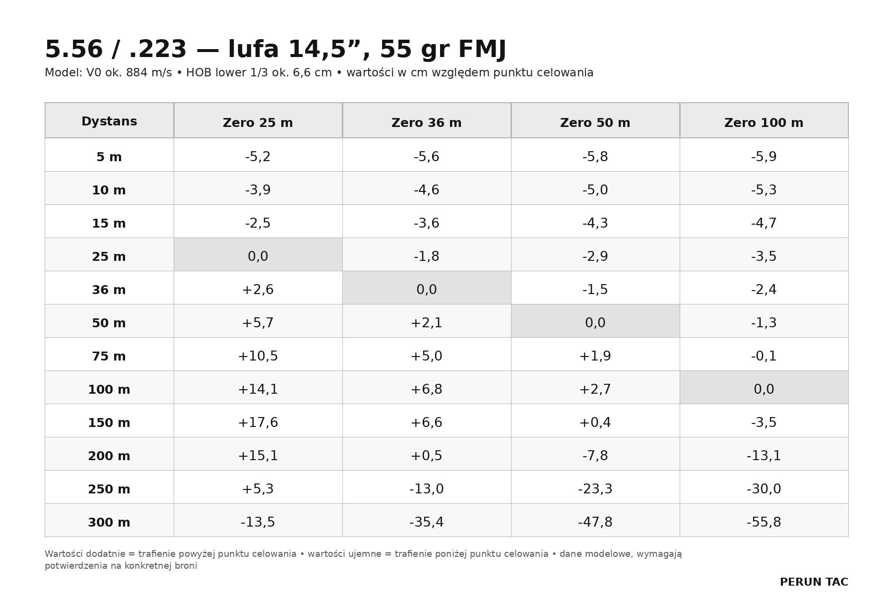
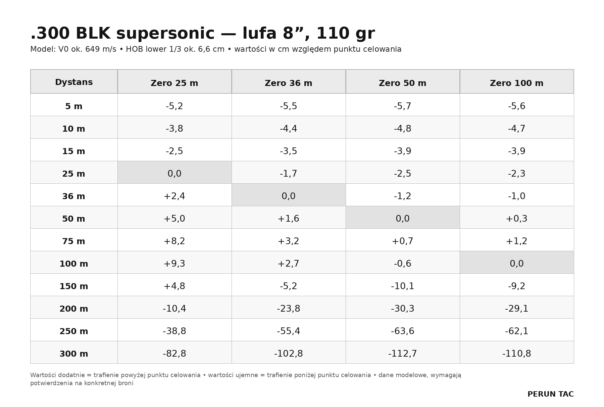
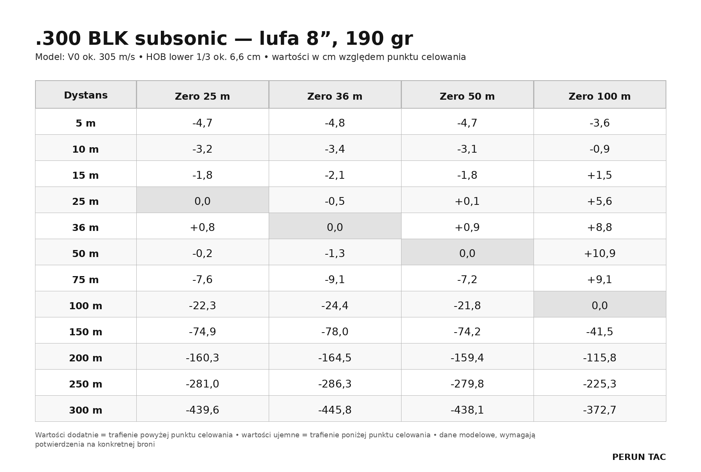

Choosing a zero for your carbine is one of those topics that very often gets presented too simply. You can find short answers all over the internet: "zero at 50", "36 is the best", "the military uses 25", "100 m is the most precise". The problem is that each of these solutions can make sense, but only when we understand what happens to the bullet between the barrel, the line of sight and the target.
A zero is not a magic sight setting. It's an agreement between the line of sight, the bore axis, the ballistics of a specific load, the barrel length and the optic's mounting height. That's why two carbines both zeroed "at 50 m" can behave differently if one has a standard red dot mount and the other a tall mount for night vision work.
In this article we'll compare zeros at 25 m, 36 m, 50 m and 100 m for two popular calibers: 5.56/.223 and .300 BLK. We'll cover .300 BLK supersonic and subsonic separately, because in practice they are two completely different ballistic worlds.
1. Assumptions behind the calculations
The values below are model values, meant to help you understand the differences between zeros. They are not a ready-made DOPE table for every carbine. For the calculations we assumed:
- Sight axis height over bore: lower 1/3, about 2.6″ / 6.6 cm
- Sight: primarily a red dot
- Distances: ranges in meters
- A positive value in the tables: the bullet hits high; negative: low
Ammunition
For 5.56/.223 we assumed a 55 gr FMJ bullet. Reference data for commercial 55 gr ammunition shows typical velocities from long test barrels around 3200-3240 fps and a G1 BC around 0.24-0.27, while real-world velocity from shorter AR-15 barrels will be lower. The model therefore assumes about 884 m/s for a 14.5″ barrel and about 808 m/s for a 10.5″ barrel.
For .300 BLK supersonic we assumed a 110 gr V-MAX bullet and a barrel of about 8″. Hornady lists 2375 fps for its 110 gr V-MAX load from a 16″ test barrel; with a shorter barrel you should assume a lower velocity, about 649 m/s / 2130 fps in the model.
For .300 BLK subsonic we assumed a 190 gr Sub-X bullet and a barrel of about 8″. Catalog data shows 1050 fps from a 24″ test barrel, a G1 BC of .437 and a very large drop already at 200-300 yd. For the short barrel the model assumes about 305 m/s / 1000 fps.
2. Why does mounting height matter so much?
The optic's mounting height, or HOB (height over bore), is the distance between the bore axis and the sight axis. On an AR-15, a standard lower 1/3 red dot mount usually gives you around 2.6″ / 6.6 cm. That means at very close range, e.g. 5-10 m, the bullet will hit low by roughly that value, because it hasn't yet had time to "climb" into the line of sight.
There's already a separate article on how mounting height affects your zero and shifts the second zero on our site. It's worth reading as a companion piece: switching from a classic mount to a tall one doesn't just change your close-range offset, it also changes the whole behavior of the trajectory, the bullet's rise at mid-range, the position of the second zero and your map of corrections.
That's why all the tables below are based on one assumption: lower 1/3, about 6.6 cm HOB. If you're using a 1.93″, 2.26″, Hydra or another tall mount, your values will be different.
3. Zeros for .223/5.56

Interpretation: 14.5″ barrel
For a 14.5″ barrel, a 25 m zero produces very high hits in the middle of the trajectory, especially around 100-200 m. The advantage is that out to 300 m the bullet stays inside a fairly wide but still practical "tube" of hits for large target zones. This is exactly why at Perun Tac we use the 25 m zero as a practical training solution: it gives relatively few corrections to memorize out to about 300 m. That doesn't mean, however, that it's the only good zero.
A 36 m zero is "flatter" in the 36-200 m bracket, but at 300 m it already requires a bigger correction. A 50 m zero is very comfortable for close and medium distances, especially when most of your work happens out to about 150-200 m. A 100 m zero is the most intuitive for longer-range shooting, but it won't serve you well when shooting at closer distances.
Interpretation: 10.5″ barrel
A shorter barrel means a lower muzzle velocity. Out to 100-150 m the difference against the 14.5″ barrel doesn't look dramatic, but the further out you go, the faster it becomes visible. At 300 m the 10.5″ barrel already demands noticeably more awareness of your corrections.
In practice a 25 m zero can still be useful if the goal is a simple working map out to about 300 m, but you have to remember that at 100-150 m the bullet will be noticeably high. A 50 m zero is convenient on a shorter carbine if most of your shooting happens up close and 200-300 m distances are occasional and treated as requiring a deliberate holdover. With a 10.5-inch barrel, long-distance shooting is unlikely to be the default choice, so a 100 m zero should probably not be on the table.
4. Zeros for .300 BLK

Interpretation: supersonic
.300 BLK supersonic from a short barrel is very practical at close and medium distances, but it doesn't behave like 5.56 from a 14.5″ barrel. At 200-300 m the drop is already much larger. This matters especially if someone tries to reuse the habits they built on an AR-15 in 5.56.
A 25 m zero gives a simple, fairly high trajectory up close and sensible behavior out to about 200 m. The 50 m and 100 m zeros are more intuitive, but they require holding noticeably higher at 200-300 m. With .300 BLK supersonic it's worth heavily limiting "ready-made answers from the internet" and genuinely mapping your own carbine.

Interpretation: subsonic
.300 BLK subsonic has to be treated separately. It's not simply a "slower .300 BLK", it's a completely different trajectory. The bullet flies much slower, so the time of flight is longer and gravity has far more time to "pull" it downward.
For subsonic loads a 25 m or 50 m zero can be practical at short distances, especially if the gun is run suppressed and the real working range is close. With drops this large, reinforcing your zero map during training becomes especially important.
5. Pros and cons of each zero
25 m zero
Simple to set, available at most ranges and very practical for training. It gives a relatively simple map of corrections out to about 300 m, particularly in 5.56/.223. At Perun Tac we use it for exactly that reason: it lets beginners understand their carbine's behavior faster and limits the number of corrections to memorize at typical tactical distances.
The downside is a clear rise of the bullet at medium distances. With 5.56 from a 14.5″ barrel the model shows about +14 cm at 100 m and about +15 cm at 200 m. That can still be acceptable for a large target zone, but it is not irrelevant with small targets, head boxes, partially obscured targets or shooting through ports.
36 m zero
A popular compromise between a close zero and usefulness at longer distance. Be careful, though, about copying American "36 yard zero" write-ups: 36 yards is about 33 m, not 36 m. On top of that, mounting height matters a lot. With the assumed lower 1/3 HOB, a 36 m zero gives a reasonable trajectory in the 36-200 m bracket for 5.56, but at 300 m it already needs a clear correction. A practical solution, but not a universal one.
50 m zero
A very good compromise for many red dot users. It produces small deviations at close and medium distances, and at the same time it's easy to set up at a typical range. For people working mainly in the 0-200 m bracket it can be very comfortable. The downside is that at 300 m, especially from a shorter barrel or with .300 BLK, you already have to hold high: with 5.56 from a 14.5″ barrel the model shows about -48 cm at 300 m, and from a 10.5″ barrel about -64 cm.
100 m zero
Very readable and precise. An excellent reference point for people using LPVOs, magnified optics, MRAD/MOA reticles, or keeping careful ballistic notes. If you want to build deliberate DOPE for shooting at longer distances, 100 m is a very logical choice. The downside with a red dot is that at close distances the bullet still hits low because of HOB, and further out it starts dropping quickly: with 5.56 from a 14.5″ barrel about -56 cm at 300 m, with a 10.5″ about -69 cm. That demands a deliberate holdover.
6. Red dots, LPVOs and BDC reticles
In this article we mainly assume a red dot, i.e. a simple aiming point without an elaborate ballistic reticle. In that case the choice of zero matters enormously, because the shooter works mainly by holding the point: higher, lower or center.
With an LPVO the situation can look different. If the reticle has an MRAD or MOA scale, you can build your own corrections and use them regardless of the chosen zero. If, however, the optic has a BDC reticle, the manufacturer usually designs it for a specific caliber, velocity, mounting height and zeroing distance. Then the choice of zero is not arbitrary: if the BDC reticle requires a 100 m zero and we set the gun up at 50 m, the markers may stop matching the real trajectory.
7. How to set your zero precisely
The most important rule: a zero cannot be set "more or less". This is not a stage you can treat as a formality with the thought "I'll fix it later". Every subsequent shot, every drill and every correction will be built on how well we zeroed the sight. A good zero requires precision, patience and a stable platform.
1) Establish the true distance
Don't set the target up "by eye". If you're zeroing at 25 m, it has to be 25 m from the firing point to the target. A difference of a few meters can change the result, especially with short zeros. Ideally use a rangefinder, a measuring tape or a marked lane at the range. If you're using a scaled-down zeroing target, make sure it's designed for exactly that distance, caliber and intended zero.
2) Shoot from the most stable position possible
We set the zero to eliminate hardware error, not to test our shooting position. Ideally use a bench, a rest, a shooting bag, a stable front rest or a zeroing station. If you don't have a bench, use the most stable prone position possible with solid support. This stage is not about speed, it's about repeatability.
3) Shoot groups, not single shots
Don't adjust the sight after one shot, unless the first shot is wildly off the target and you need to get back on paper. The standard should be 3-shot groups, or better yet 5-shot groups if ammunition and time allow. After firing a group, find its center. You adjust the sight to the center of the group, not to the best single hit.
4) Calculate the correction
If the group is 4 cm left and 3 cm low, dial in the correction based on your sight's click values. Make sure you know what one click means at the given distance: a 1/2 MOA sight works differently from a 1/4 MOA one, and differently again from MRAD adjustments. You can also work by trial and error: apply a correction, count the clicks and write them on the target. After the follow-up shots, compare the difference between the points of impact — now you know how many clicks equal what distance on the target.
5) Confirm the zero with another group
After adjusting, fire the next group. If the center of the group is where it should be, the zero is set. If not, repeat the process. It's also good practice to re-confirm your zero after removing and remounting the optic, changing the mount, changing ammunition, changing the suppressor, or after the gun takes a hard knock.
8. Map your zero
Setting the zero at 25, 36, 50 or 100 m doesn't end the job. You still need to know your zero. That means checking where the gun hits at other distances. The minimum set for mapping:
- 5 m, 10 m, 15 m
- your zeroing distance
- 50 m, 100 m, 200 m
- 300 m, if the range allows it
Fire shots from each distance while always holding the same point of aim (ideally the center of a large target). After each string, walk up to the target and label the hits with the distance you fired from. When you're done, the target becomes your zero map. Keep it, and from then on shoot while shifting your point of aim so that your hits land in the target zone you've chosen.
9. So which zero should you choose?
There is no single best zero for every carbine and every shooter.
For 5.56/.223, a 25 m zero can be very practical if you want a simple working map out to about 300 m and accept higher hits at medium distance. A 36 m zero is an interesting compromise, but it has to be understood in the context of a specific mounting height. A 50 m zero is very comfortable for a red dot and for work at close and medium distances. A 100 m zero is the clearest for precise confirmation, LPVOs and building DOPE.
For .300 BLK you have to separate supersonic and subsonic. Supersonic can still be treated as a practical caliber for close and medium distances, but with more drop than 5.56. Subsonic demands a completely different approach: shorter real-world distances, careful mapping and awareness of very large corrections.
What matters most is not whether you pick 25, 36, 50 or 100 m. What matters most is that you know what that choice means on your carbine, with your ammunition, your barrel, your mount and your sight.